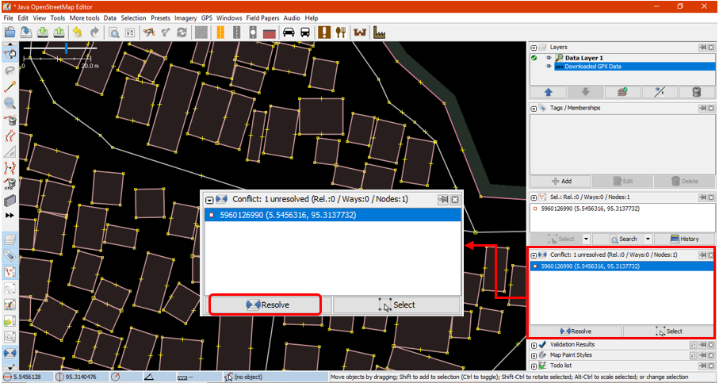

Mengatasi Konflik pada Data OpenStreetMap (OSM)
Tujuan Pembelajaran:
- Mampu menjelaskan pengertian konflik data OSM pada JOSM
- Mampu menjelaskan jenis-jenis konflik data di JOSM
- Mampu melakukan cara memperbaiki konflik data di JOSM
- Mampu memahami cara menghindari konflik data di JOSM
Saat Anda meng-upload objek dengan menggunakan JOSM, beberapa kontributor OSM mungkin saja sedang mengedit wilayah yang sama dengan Anda. Hal ini dapat menimbulkan konflik pada saat Anda meng-upload objek OSM. Untuk itu, pada modul ini Anda akan mempelajari apa itu konflik pada JOSM, jenis konflik, dan cara menyelesaikan konflik pada JOSM.
I. Pengertian konflik data OSM pada JOSM
Ketika Anda sedang bekerja di JOSM dan ketika Anda meng-upload peta yang telah diedit (pelajari selengkapnya pada modul Menggunakan JOSM), mungkin Anda pernah mendapatkan pesan seperti ini:

Gambar diatas menunjukkan konflik yang terjadi pada data OSM. Mengapa konflik data pada OSM dapat terjadi? Hal ini dikarenakan, pada saat Anda mengedit di JOSM, Anda mengedit data OSM yang sama dengan pengguna lainnya pada waktu yang bersamaan. Kemudian pengguna lain lebih dahulu meng-upload perubahan data ke server OSM, sehingga ketika Anda ingin meng-upload hasil kerja Anda, server sudah memiliki versi yang baru.
Anda akan berhadapan dengan konflik ketika Anda melakukan perubahan data OSM dengan mengedit, menambahkan, atau menghapus dari server utama, dimana data tersebut juga sedang diedit oleh orang lain. Karena Anda hanya bekerja pada sebuah salinan di JOSM yang tersimpan pada komputer Anda, pengguna lain masih dapat menerima, mengedit dan meng-upload objek-objek OSM di area yang sama dan di waktu yang bersamaan dengan Anda. Kemudian, ketika objek tersebut telah Anda edit dan di-upload pada saat yang bersamaan, server OSM tidak mengetahui versi mana yang benar dan hasil perubahan mana yang akan disimpan. Jika terjadi hal demikian, maka konflik perlu diperbaiki dan diselesaikan sebelum Anda meng-upload data ke server OSM.

Gambar diatas merupakan contoh konflik yang mungkin terjadi diakibatkan oleh perbedaan antara lokasi objek versi Anda (versi saya) dan versi yang ada di server OSM (versi mereka). Untuk menyelesaikan konflik tersebut, Anda harus memilih salah satu versi diantara kedua versi tersebut (lihat III. Cara memperbaiki konflik data di JOSM).
II. Jenis-jenis konflik data di JOSM
a. Konflik properti
Konflik properti merupakan konflik yang disebabkan perbedaan titik koordinat yang terjadi pada sebuah objek yang telah dipindahkan atau dihapus posisinya pada dua versi yang berbeda. Hal ini dapat disebabkan objek tersebut telah diedit, dipindahkan posisinya atau dihapus oleh pengguna lain.

Gambar diatas merupakan contoh jenis konflik yang disebabkan oleh perbedaan versi posisi salah satu node/titik pada suatu objek. Untuk menyelesaikannya Anda perlu memilih versi posisi titik mana yang ingin Anda gunakan.
b. Konflik tag
Konflik tag terjadi akibat adanya perbedaan tag atau informasi yang terjadi pada sebuah objek yang telah diubah atau dihapus posisinya pada dua versi yang berbeda.

Gambar diatas menunjukkan perbedaan versi tag pada objek yang sama. My version menunjukkan objek yang mempunyai tag Rumah Sakit (amenity = hospital) dengan nama Rumah Sakit Tebet Raya. Sedangkan objek pada Their version menggunakan tag klinik (amenity = clinic) dengan nama RS Tebet Timur. Untuk menyelesaikannya, Anda perlu memilih salah satu versi tag yang menurut Anda paling benar.
c. Konflik node/titik
Konflik pada titik/node terdapat perbedaan pada daftar titik/node yang terjadi pada sebuah objek yang berbentuk garis, dimana titik pada garis tersebut telah dipindahkan atau dihapus posisinya pada dua versi yang berbeda.

III. Cara memperbaiki konflik data di JOSM
Proses dalam menyelesaikan konflik cukup sederhana di dalam JOSM, walaupun sebagian besar pengguna OSM mengalami kebingungan untuk menyelesaikan permasalahan konflik pada data OSM. Pada dasarnya, semua konflik yang terjadi JOSM akan menyediakan dua pilihan - objek versi Anda dan satu lagi versi orang lain yang berada di server. Anda harus memilih apakah ingin tetap menggunakan versi Anda atau versi server. Langkah untuk menyelesaikan konflik adalah sebagai berikut:
- Ketika jendela konflik muncul, Anda mungkin akan memilih tombol Synchronize node 5,960,126 only, tetapi pilihan ini hanya akan memperbaiki konflik yang terjadi pada satu node/titik tertentu. Oleh karena itu, sebaiknya Anda memilih tombol Synchronize entire dataset agar anda dapat menyelesaikan seluruh konflik sekaligus.

- Setelah itu akan muncul jendela berisi jumlah konflik yang terdeteksi, klik OK.
- Akan muncul daftar konflik pada panel Conflict di sebelah kanan peta Anda. Untuk menyelesaikan konflik yang muncul, Anda dapat memilih konflik pada panel tersebut dengan cara klik pada konflik kemudian klik Resolve.

- Ketika Anda klik tombol Resolve, akan muncul jendela baru yang yang berisikan detail konflik Anda. Pesan konflik tersebut mungkin terlihat rumit, namun sebenarnya sederhana. Anda akan mengetahui jenis konflik apa yang Anda dapatkan yang ditunjukkan oleh simbol
 . Konflik dalam contoh ini terjadi karena perbedaan titik koordinat dan perubahan posisi objek. Anda dapat melihat daftar koordinat yang mengalami perubahan pada contoh gambar di bawah. Konflik yang terjadi merupakan konflik properti yang disebabkan oleh satu titik.
. Konflik dalam contoh ini terjadi karena perbedaan titik koordinat dan perubahan posisi objek. Anda dapat melihat daftar koordinat yang mengalami perubahan pada contoh gambar di bawah. Konflik yang terjadi merupakan konflik properti yang disebabkan oleh satu titik.
- Anda hanya dapat menyelesaikan dua konflik pada saat yang sama. Anda dapat memilih salah satu antara versi Anda atau versi yang lain pada server. Jika Anda yakin bahwa hasil editing yang Anda lakukan benar dan tepat (misalnya Anda sudah survei lapangan atau mengetahui wilayah tersebut), maka Anda dapat memilih Versi Saya/My Version (local dataset). Namun, jika Anda tidak mengetahui wilayah tersebut dan melihat pengguna tersebut lebih mahir maka Anda dapat memilih Versi mereka/Their version (server dataset). Klik tanda panah biru pada kolom versi yang telah Anda pilih. Konflik yang sudah berhasil diselesaikan akan berubah warna menjadi hijau serta tanda centang hijau
 .
.

- Setelah Anda memilih versi mana yang menurut Anda paling benar, Anda harus memastikan warna kolom sudah berubah dari warna merah muda menjadi warna hijau. Hal ini menandakan bahwa Anda telah berhasil memilih salah satu versi untuk menyelesaikan konflik.

- Kemudian klik Apply Resolution seperti ditunjukkan gambar di bawah. Setelah Anda selesai menyelesaikan semua konflik, Anda dapat memulai untuk upload hasil perubahan data OSM Anda.

- Pada jendela menu, Anda memiliki kotak jendela Conflicts . Jendela ini menampilkan jumlah dari daftar konflik yang terjadi pada cara klik pada salah satu konflik lalu klik tombol Resolve. Anda juga dapat menggunakan cara lain yaitu dengan klik kanan pada salah satu konflik, lalu pilih Resolve to my versions atau Resolve to their versions. Untuk menemukan objek yang terkena konflik, klik kanan lalu klik Zoom to Conflict. Ini sangat berguna apabila Anda berhadapan dengan banyak konflik dan Anda perlu memeriksa dan menyelesaikannya satu per satu.
Catatan : Anda tidak dapat meng-upload perubahan sampai panel Conflicts kosong dan semua konflik telah diselesaikan. Perlu diperhatikan bahwa Anda perlu berhati-hati dalam menyelesaikan konflik yang terjadi dan sebaiknya konflik diperiksa dan diselesaikan satu persatu agar hasilnya lebih maksimal.
IV. Cara menghindari konflik data di JOSM
Anda dapat melakukan beberapa hal, agar terhindar dari konflik saat meng-upload objek ke dalam server OSM.
a. Meng-upload hasil perubahan secara berkala
-
Untuk meminimalkan konflik yang dapat terjadi, Anda dapat mengupload secara berkala untuk hasil pengeditan data OSM. Misalnya, jika Anda akan melakukan pemetaan 100 bangunan dan koneksi internet Anda tidak bagus, maka Anda dapat mengupload secara berkala setiap Anda mendijitasi 20 bangunan atau setiap 15 menit sekali. Kemungkinan konflik akan muncul lebih banyak apabila Anda mengedit seluruh wilayah terlebih dahulu dan menunda untuk meng-upload nya. Semakin lama selang waktu antara men-download data dengan meng-upload editan Anda, maka semakin besar kemungkinan seseorang telah mengedit data tersebut pada saat itu.
-
Jika Anda menyimpan data OSM dan ingin meng-upload di waktu yang tidak bersamaan, maka Anda dapat membarui data OSM untuk mendapatkan data OSM terbaru yang ada di server OSM. Sebelum meng-upload pekerjaan Anda ke OSM, klik pada menu File → Update data atau pilih Update Modified lalu tunggu sampai proses pembaharuan data selesai. Setelah itu Anda dapat meng-upload data dengan menggunakan opsi Upload data pada menu File atau klik ikon
 pada bar menu.
pada bar menu.
b. Lakukan perubahan hanya di area yang di-download
Anda dapat melakukan pemetaan di wilayah yang spesifik untuk mengurangi risiko konflik dengan tidak mengedit objek yang berada di area yang diarsir pada data layer JOSM. Langkah ini dapat menghindari banyak pengguna mengedit di wilayah yang sama. Anda dapat dengan mudah melihat mana daerah luar dari daerah yang Anda download di JOSM, karena latar belakang daerah luar tersebut terdapat garis-garis diagonal (arsiran), bukan hanya warna hitam.

Setelah Anda melakukan download data, area untuk Anda melakukan perubahan ialah area kotak yang tidak mempunyai garis arsiran. Area diluar kotak yang merupakan area arsiran adalah area yang mungkin saja sedang dikerjakan oleh pengguna lain. Sebaiknya Anda menghindari area tersebut untuk menghindari terjadinya konflik.
c. Menggunakan Tasking Manager
Jika Anda ingin memetakan wilayah yang sama secara kolaboratif, maka Anda dapat menggunakan Tasking Manager. Dengan menggunakan Tasking Manager, Anda lebih mudah memilih wilayah yang spesifik dan wilayah tersebut tidak bisa diambil oleh pengguna lainnya. Para relawan pemetaan di area tersebut dapat memilih sebuah kotak yang ingin dipetakan, dan ketika mereka selesai melakukan pemetaan, mereka dapat menandai kotak tersebut sebagai komplit atau sudah selesai dipetakan. Dengan cara ini, sebuah tim yang berisi banyak orang yang tersebar di berbagai daerah dapat berkoordinasi bersama untuk menyelesaikan pemetaan pada grid tersebut. Penggunaan grid/kotak untuk membagi area kerja masing-masing tiap pengguna dapat meminimalisasi terjadinya konflik di JOSM. Cara penggunaan Tasking Manager selengkapnya dapat dilihat pada modul Penggunaan Tasking Manager.

RINGKASAN
Jika Anda dapat mengikuti dan mempraktikkan seluruh tahapan dalam bab ini, maka Anda telah berhasil mengetahui pengertian konflik dan menyelesaikan konflik pada data OSM dengan menggunakan JOSM. Selain itu, Anda juga telah berhasil mempelajari jenis-jenis konflik yang dapat terjadi dan mengetahui cara-cara untuk menghindari konflik pada JOSM.